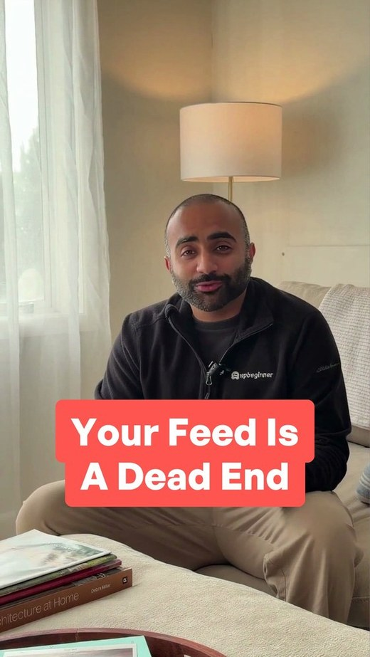
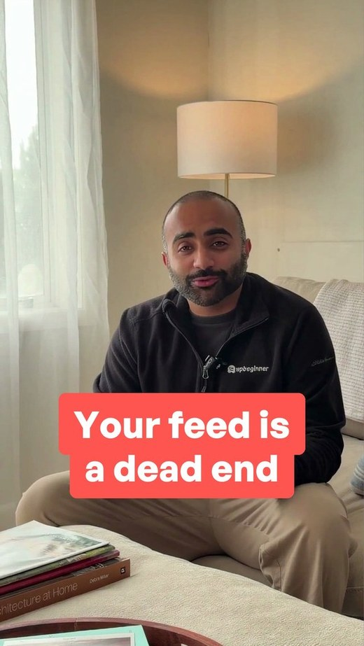
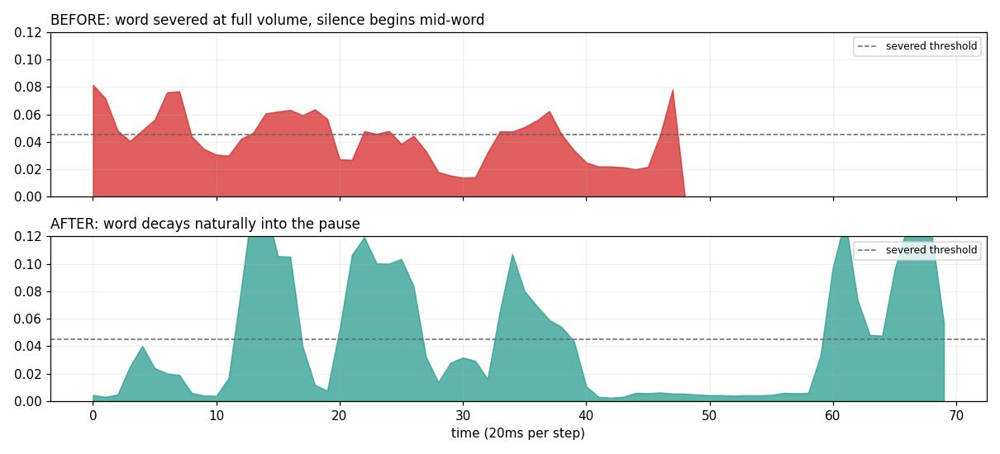
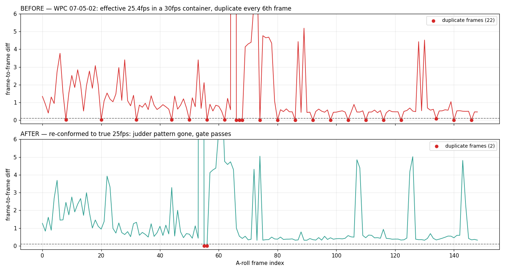

Sixteen changes shipped into the video pipeline, each shown before and after. Every clip below is rendered from the real pipeline, not illustrated.
Q2 showed the pipeline could skip steps and let problems through. Nobody could say which steps or how often, because quality was judged by whoever happened to watch the file.
This rock audited 25 finished videos, found where quality was slipping, and turned each recurring problem into a check that runs automatically. Some block a render outright. The rest report before anything is published.
The audit found 63 specific problems across those 25 videos. Not one was defect-free.
On-screen text had no boundary, so a long line could run past the edge of the frame and get sliced.
Text now goes through a component that owns the margin and wraps, rather than each design remembering to leave room. A margin applied by hand is not enforcement; one that text physically cannot cross is.
A check also catches the two things that defeat it: text told never to wrap, and a fixed width wider than the safe area.
Mockups were drifting to the top of the frame, leaving the bottom third dead and pushing content away from where the eye lands.
Placement is owned by the layout, not by each design. A check measures where the content actually sits and fails a clip that is badly off centre.
This one also cleaned up a mess: three parts of the system agreed on the safe zone and a fourth used different numbers, which is why it had been warning on videos that were fine. Now there is one definition.
Several elements were appearing at once, so the viewer had nowhere to look and nothing followed what was being said.
The check took three attempts because counting things in a frame does not work: one browser window containing three review cards looks identical to three separate elements.
The rule itself was the answer. "One at a time following the spoken word" is about sequencing, not quantity. Three things on screen at the end is fine if they arrived one by one. So the clip is compared against itself: if nothing new appears over time, nothing was revealed.
The one most visible in finished videos. B-roll was arriving late, so the speaker was briefly on screen at the start of a sentence that should already have been covered.
B-roll used to be timed against spoken words, independently of where the video is actually cut. Two separately calculated numbers never line up, and the gap between them is the reveal.
Now the cut positions are recorded and B-roll is placed on them. If the boundary is the cut, there is nothing left to reveal.
The information already existed: the step that removes silences was working out where every cut lands and then discarding it. Recording it took six lines.
The caption outlived the picture by a frame or two, so the video finished on black with text stranded on it. On a loop it flashes every time.
A check looks at the last fraction of a second for a near-black frame that still has bright caption pixels on it. A genuinely black fade with no text is left alone, which is what stops it firing on clean endings.
Building the fix also exposed a bug in the check itself: a video it could not open was quietly passing, because no frames read means no problems found. A check that green-lights a file it never read is worse than no check.
Three different capitalisation styles were shipping side by side, and several thumbnails read as typos.


Two rules, taken straight from the audit: the second line continues the sentence so it starts lowercase unless the first line closes, and interior words are not capitalised. Brand names are exempt.
It runs inside the thumbnail generator and stops the render, so bad copy cannot reach a file. Building it also found the source of the title-case variant: the generator's own fallback was creating it.
The caption sits in a fixed band near the bottom. Almost every mockup was writing its own text into that same band, so two layers of text fought each other.
A rule already existed saying B-roll content must sit above the subtitle line. Nothing was enforcing it. A check now reads each frame and fails a video where the two overlap.
This is the one check needing judgement rather than measurement, so it uses vision against a written rubric. Plain text detection was tried first and rejected: it misses the low-contrast mockup text these collisions actually involve.
Captions were dropping out mid-sentence, leaving stretches where someone is talking with nothing on screen.
The first version was wrong: it flagged the pauses between words, which are breaths, not faults. It fired on every comma.
The real question is whether a caption was on screen while someone was talking, which needs the finished video, not the word list. The pipeline keeps a copy with captions and one without, so comparing them isolates the caption exactly.
The caption sat at one height on camera shots and a different height on B-roll, jumping on every cut.
This needed care. There is a deliberate shift that moves the caption on B-roll so it clears the content, and a blunt rule would have fought a feature that exists on purpose.
So it tells the two apart: a consistent difference between shot types is reported as intentional to confirm, while wandering inside a single shot type fails.
Mockups were being scaled down until nothing inside them could be read at thumb size.
Measuring text size from the finished picture failed twice. The way through was that we render these ourselves, so the text size is written in the design file rather than something to guess at.
Flagging every small size was useless, since a real interface legitimately has small labels. The signal is the largest text in a design: if even that is small, nothing in it reads.
Colours were being hand-picked instead of taken from the brand palette, so the element the eye lands on was sometimes off-brand.
Every colour is checked against the brand palette. Three things pass through: real platform colours, since an Instagram mockup has to look like Instagram; interface conventions like a red error or the buttons on a browser window; and greys, judged by how colourful they are rather than by a list.
Clips were being held dead still for several seconds, which reads as a broken video.
The check samples motion across the clip and fails anything held still for four seconds or more. Tuned so a calm, slow-moving mockup still passes: the target is a frozen picture, not a quiet one.
Trimming silence too aggressively can slice the end off a word, which sounds abrupt even when you cannot say why.

The ends of words are soft sounds, so a severed one leaves no obvious jump to detect. The giveaway is subtler: silence starting while the word is still sounding. Natural speech fades out; a cut one stops at full volume.
Some videos carried 25fps footage inside a 30fps file, so the encoder repeated every sixth frame and the speaker moved in steps.

This one is invisible to every normal check. The file says 30fps and all the metadata agrees; only the picture disagrees.
It counts genuinely repeated frames in the camera footage, where real footage never repeats, and separates a framerate mismatch from a deliberately held picture by how evenly the repeats are spaced.
Mockups and scripts occasionally claimed things the product does not do. Two videos had already been killed for exactly this.
I had this down as the one thing no check could handle, on the basis that it needs a human who knows the product. That was wrong: the product truth is already written down, so the check is mechanical.
The subtlety is negation. A production note saying "NOT a unified inbox" is the rule being followed, not broken. The first run flagged five projects and every one was a note like that.
Three smaller thumbnail checks, all now guaranteed rather than hoped for.
Two of these turned out answerable from the generator rather than by measuring the finished image. Text size auto-fits, and colours come from the brand palette, which I verified matches the real brand values.
The gap was a headline so long that even the smallest size overflows. That case now stops the render.
| Check | State | What it catches |
|---|---|---|
| Captions over on-screen text | Live | The caption sitting on a mockup's own words |
| Caption spelling | Live | Brand names mangled, "WPChat" as "WP Chat" |
| Caption timing | Live | Talking with no caption underneath |
| Caption position | Live | The caption drifting, while allowing the deliberate B-roll shift |
| Text too small to read | Live | A mockup shrunk until nothing in it is legible |
| Text cut off at the edges | Live | Change 1 above |
| Brand colours | Live | Hand-picked colours instead of brand ones |
| Accurate product claims | Live | Claims the product cannot support, checked against written product truth |
| Thumbnail copy | Live | Change 6 above |
| Thumbnail legible / on-brand | Live | Guaranteed by the generator, plus the one case it could not cover |
| Thumbnail eyes open | Live | Picks another frame if the eyes are shut |
| Frozen B-roll | Live | A clip held dead still |
| A-roll leak | Live | Change 4 above |
| Clipped words | Live | A word severed by a tight cut |
| B-roll placement | Live | Change 2 above |
| Stacked B-roll | Live | Change 3 above |
| End frame | Live | Change 5 above |
| A-roll framerate | Live | Juddering from a lower-rate source, invisible to any metadata check |
| Transitions | Not built | Deliberately dropped: two attempts could not tell a slow crossfade from a camera move reliably enough to trust |
Two checks were built and deliberately not shipped, because both flagged correct work. A check that cries wolf teaches everyone to ignore all of them, which costs more than the problem it catches.
| What was asked | State | Where it stands |
|---|---|---|
| A written list of specific failure points, each with a timestamp and screenshot | Met | 63 findings across 25 videos, grouped into 19 defect types. Every one has a real example, not a general impression. |
| At least 6 concrete fixes shipped into the pipeline, each with a before and after | Met | 16 changes shipped, shown above. Six of them corrected real output: framerate, end frame, thumbnail copy, frame alignment, the cut record, and cut anchoring. |
| All four stages complete | 2 of 4 | Scope & pitch and Produce/draft are done. Review is this conversation. Publish & measure needs the checks running on live work over the coming weeks. |
| Findings reviewed with Lianne at the Q3 midpoint | Now | This document and the full audit report. |
"Live" is not one thing, so it is worth splitting:
| Enforcement | Count | Which |
|---|---|---|
| Blocks the work | 13 | Caption spelling, timing and position; text too small; frozen B-roll; B-roll placement; A-roll leak; cut anchoring; clipped words; end frame; framerate; thumbnail copy and legibility |
| Reports, does not stop the render | 3 | Text cut off at the edges, brand colours, stacked B-roll. Caught and fixed during the edit. They stay as reports until the backlog below is cleared, then they block. |
| Runs at QC | 2 | Caption collision, through /watch after the first edit, since it needs eyes rather than measurement. Product claims, at the scripting stage where the wording is chosen. Both are steps in the workflow, not optional. |
| Not built | 1 | Transitions. Two attempts could not separate a slow crossfade from a camera move reliably enough to trust. |
The checks are live. The work they found is not all cleared yet, and it is better to say so than to let the first person who runs them think their video broke everything:
| Found | Count | Plan |
|---|---|---|
| Places a long line could still run off screen | 60 | Fix during the edit as they come up |
| Designs where nothing is readable on a phone | 45 | 2 blocking, the rest as touched |
| Clips with two elements sharing the frame | 54 | Rebuild when the beat is next used |
| Hand-picked colours instead of brand ones | 409 | Mechanical, batch it |
| B-roll boundaries with no cut to snap to | 2 per video | Needs a judgement call each time: merge the beat or add a cut |
On the two checks that run deliberately: both sit at QC, after the first edit, rather than inline. Caption collision needs judgement rather than measurement, and product claims belong at the scripting stage where the wording is actually chosen. Neither reaches publish unchecked. On the three that report rather than block: they only block once the backlog above is cleared, because switching them on today would fail almost every render on existing work rather than on anything new, and a gate everyone bypasses is worse than no gate.